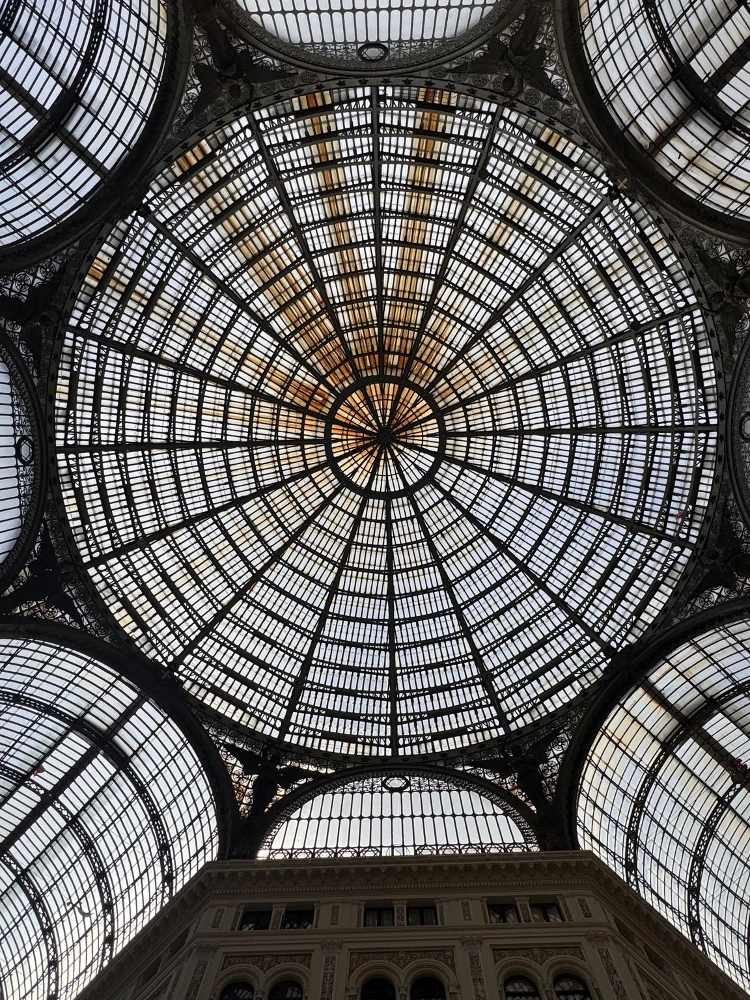
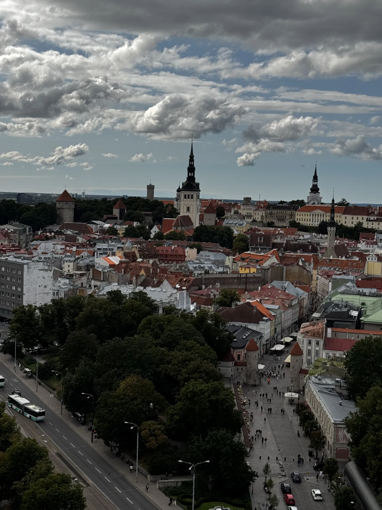
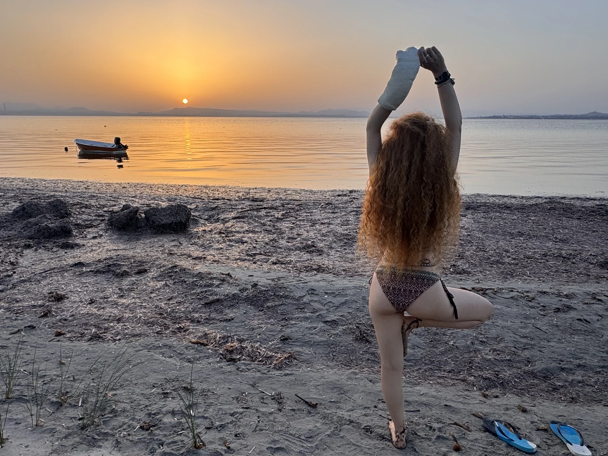
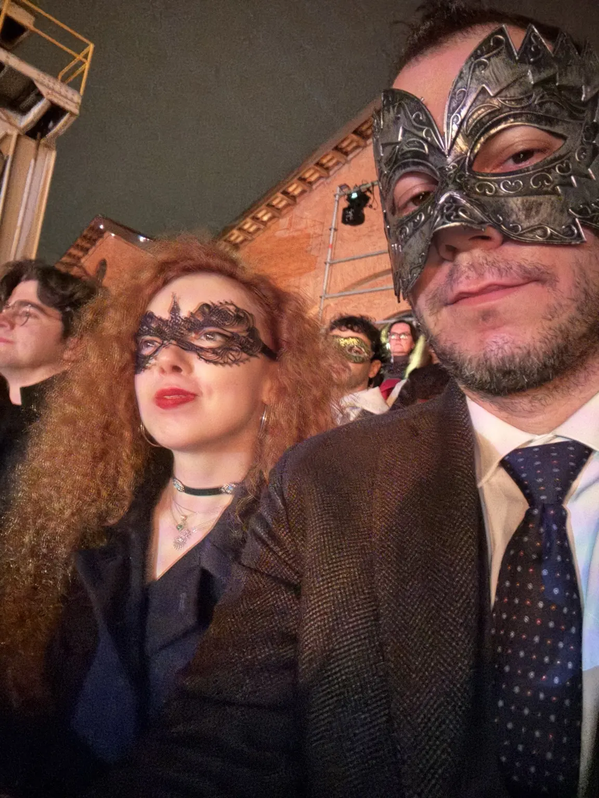

Il nostro atlante personale
Viaggi fatti.
Viaggi immaginati.
Luoghi attraversati insieme, idee per le prossime partenze e una Roma raccontata da chi la vive.
Esplora
Tre modi di partire


Ultimo viaggio
Portogallo · settembre 2026
Porto → Lisbona → Faro
Il diario fotografico ripercorre le cinque giornate realmente vissute, da Porto alla Ria Formosa. La guida preparata prima della partenza resta consultabile separatamente.
Apri il diario del viaggio La guida originale